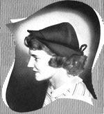
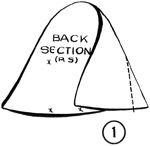
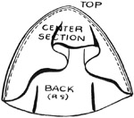
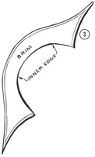
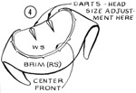
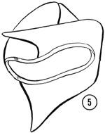
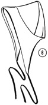
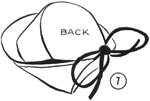
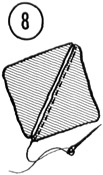

1952—How to Make Hats
by Ruby Carnahan
Felt Bonnet
(This Hat can be made out of Felt or Pique. Two sets of directions and material lists follow.)
FELT BONNET MATERIALS
- 3/8 yd. of Felt, 36" wide.
- Sawtooth grograin ribbon to match, 5/8" wide, 3/4 yd.
- 1 yd. of cording for ties.
- Needle and matching thread.
PIQUE BONNET MATERIALS
- Pique, 1/2 yd.
- Muslin, 3/8 yd.
- Crinolin, 3/8 yd.
- Cording, 1 yd.
- Sawtooth headband ribbon
PATTERNS
These are given actual size. For every 1/2" decrease or increase of headsize, take off or add 1/4" on each side seam.
CUTTING DIRECTIONS FOR FELT
(1) Trace pattern—using smooth tissue paper—place pattern, marked on fold, directly on fold of paper and do not cut fold.
(2) Place pattern on material and cut out. Cut cording in two equal pieces.
CUTTING DIRECTIONS FOR PIQUE
(1) Lay crown pattern on pique and cut out.
(2) Lay crown pattern on crinoline and cut out.
(3) Lay crown pattern on muslin and cut out.
(4) Lay brim pattern on pique and cut out two brims of pique.
(5) Lay brim pattern on crinoline and cut out one brim.
SEWING DIRECTIONS FOR FELT
(1) Fold each dart on back section—match markings—baste and stitch. Cut along fold of dart and press open.
(2) Place top edge of center section to seam edge of back—right sides together. Edges even—baste and stitch seam and press open.
(3) Turn brim edge in 3/8 in. baste and stitch. Steam press.
(4) Clip in along inner brim edge edge every 1/2 inch. With right sides together match center fronts of brim and crown, baste together and stitch.
(5) Pin headband ribbon—starting in center back. Pin ribbon around head-size—lapping end of ribbon. Stitch close to edge of ribbon. Dampen ribbon and turn headband to inside of headsize.
(6) Place cording ends to each brim point as shown in illustration. Stitch cord securely to points—turn other end of cord in with scissor points. Tie cords as illustrated.
SEWING DIRECTIONS FOR PIQUE
Baste crinoline crown pieces to wrong side of pique crown pieces then baste and stitch crown pieces together.
Press seams open.
Lay pique brim pieces right sides together, then lay crinoline brim on and baste.
Stitch brim around outer edge. Turn brim to right side, open corners and insert cords, baste and stitch brim around outer edge 1/8" from edge. Press.
Join crown to brim and stitch.
Stitch crown lining together and slip into crown. Sew lining around headsize and sew in headband ribbon.
For blocking when complete, one method is to sew two shoulder pads together to form a simple hat blocking pad. See Fig. 8.
If you enjoy VintageSewing.info, there are several ways you can support this site.
Please read our Privacy & Accessibility Policies
Comments to our staff: comments@vintagesewing.info

This work by vintagesewing.info is licensed under a Creative Commons Attribution-Noncommercial-No Derivative Works 3.0 United States License
Copyright © 1997-2008
Vintage Sewing Reference Library, Inc.
A nonprofit public benefit corporation